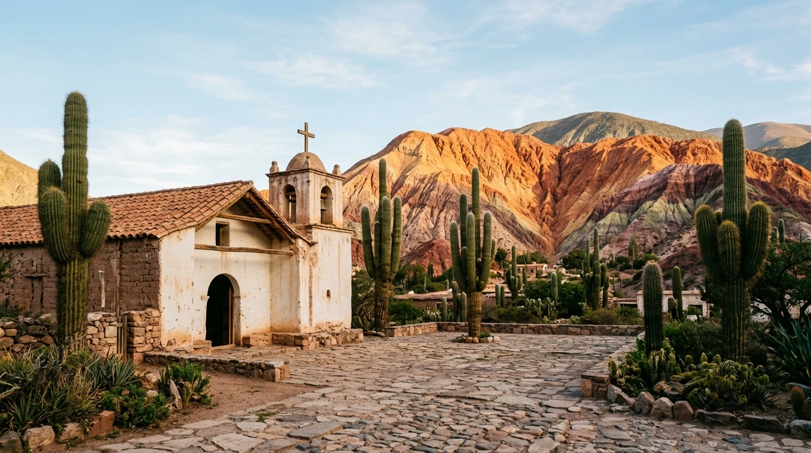
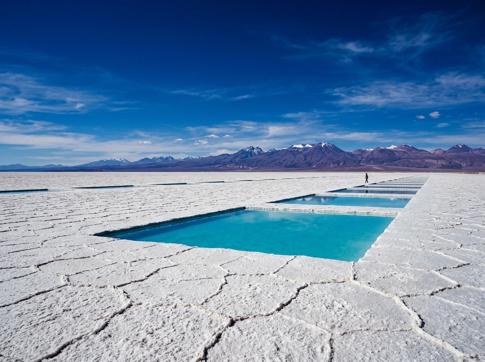
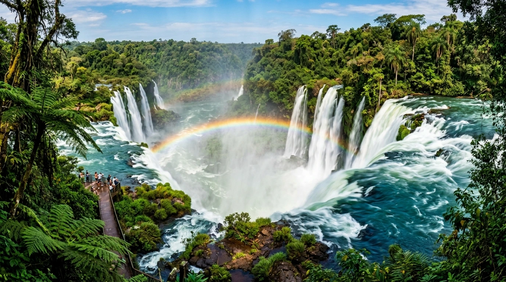
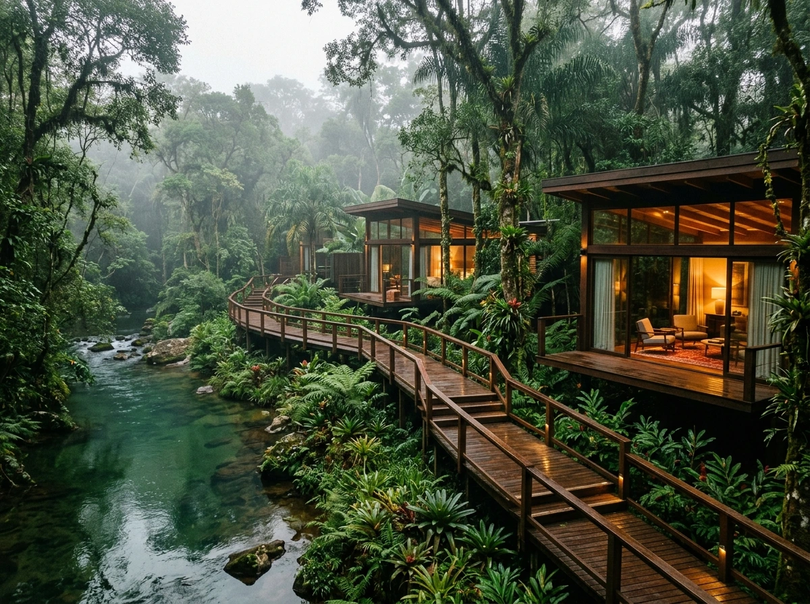
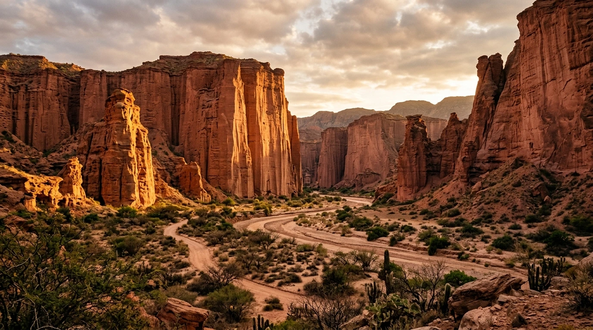
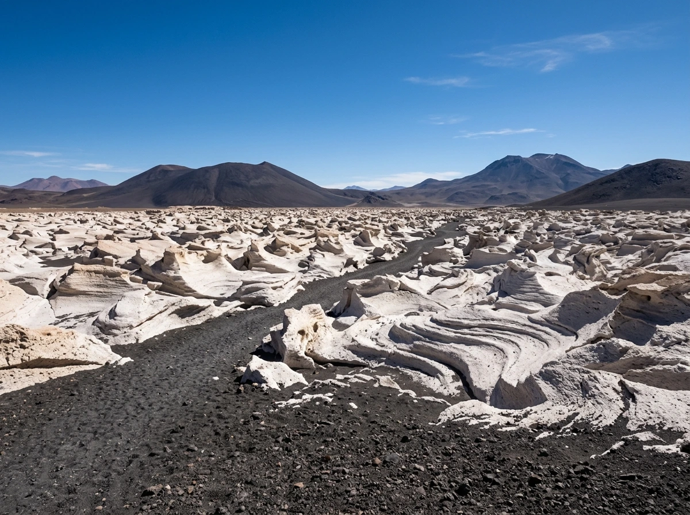
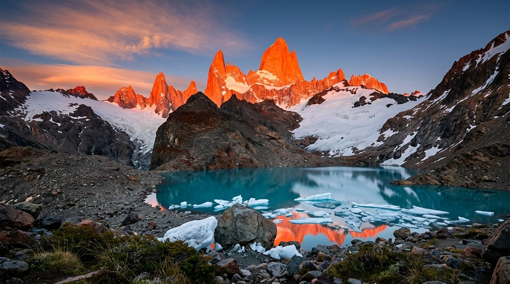
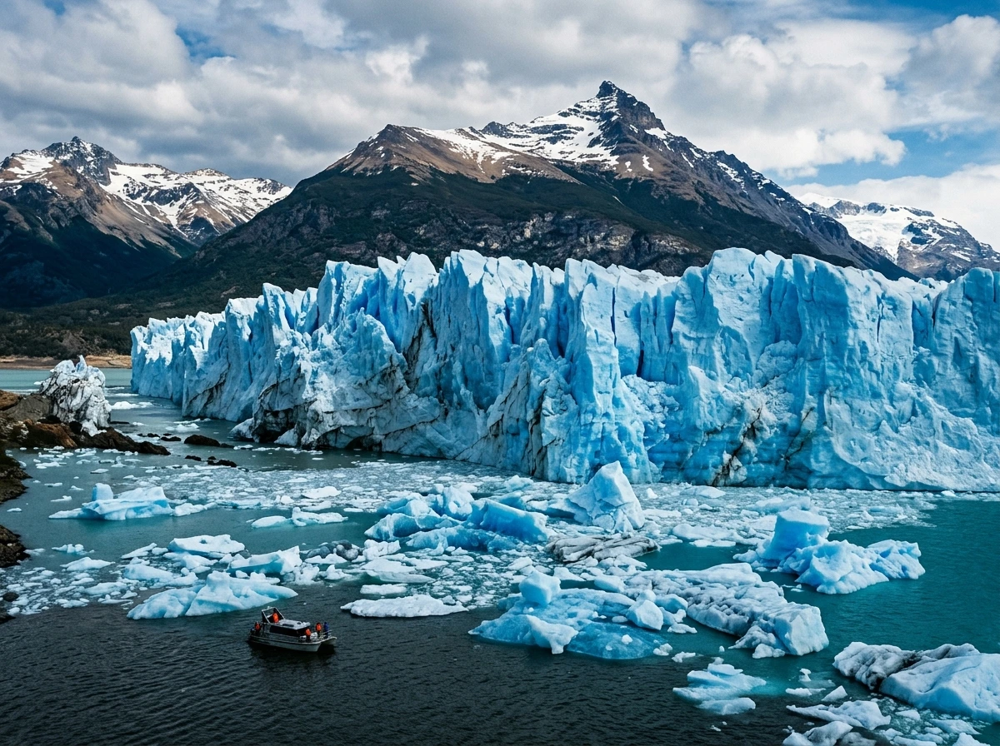
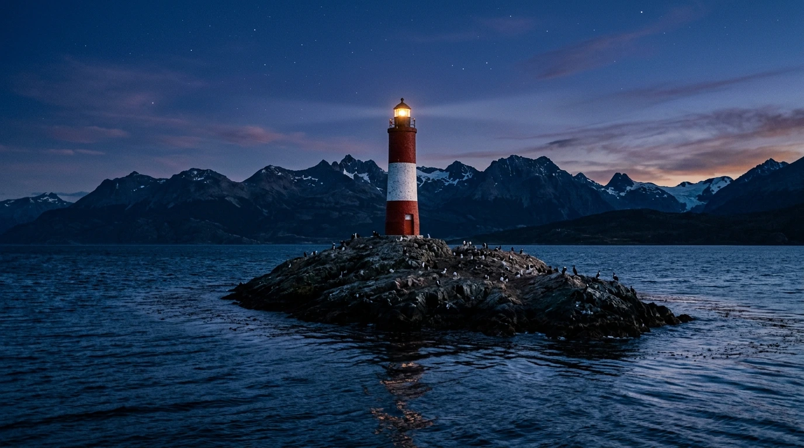
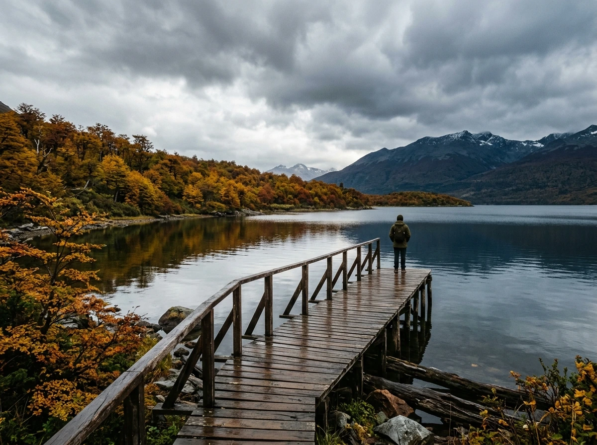

PLACA I · PURMAMARCA
Cerro de los Siete Colores
Capilla de adobe del siglo XVII y patio empedrado bajo la pared multicolor de la Quebrada a primera luz del día.
Una travesía cartográfica y sensorial desde los estratos ocres del Altiplano andino y la selva subtropical de Misiones, atravesando los cañones triásicos de Cuyo y los mares de hielo eterno de la Patagonia, hasta el confín austral de Ushuaia.
En el silencio mineral de la Quebrada de Humahuaca, los estratos sedimentarios de más de seiscientos millones de años componen una sinfonía de pigmentos naturales: ocres marinos, terracotas terciarias y calicantos andinos. En Purmamarca, las capillas de adobe colonial conviven con cardones centenarios, mientras más arriba, las Salinas Grandes extienden su manto de salitre blanco bajo un cielo cobalto de pureza absoluta.

Capilla de adobe del siglo XVII y patio empedrado bajo la pared multicolor de la Quebrada a primera luz del día.

Piletones geométricos de salmuera turquesa reflejando el firmamento andino y los conos volcánicos del horizonte.
El murmullo atronador de doscientos setenta y cinco saltos de agua emerge en el corazón esmeralda de la selva virgen de Misiones. La Garganta del Diablo proyecta columnas de bruma volcánica y arcoíris perpetuos sobre la tierra roja, donde la densa canopia de helechos gigantes y lapachos abriga refugios de madera noble inmersos en la naturaleza más exuberante de América del Sur.

Masas colosales de agua esmeralda y arcoíris sobre la muralla basáltica de la selva virgen subtropical.

Pasarelas de madera noble sobre el río cristalino y pabellones de vidrio iluminados en la noche selvática.
El tiempo geológico se manifiesta con monumentalidad sagrada en los farallones verticales de arenisca roja de ciento cincuenta metros en Talampaya y las figuras lunares de Ischigualasto. Más al norte, en la puna catamarqueña de Antofagasta de la Sierra, el Campo de Piedra Pómez despliega un laberinto de olas blancas petrificadas por erupciones volcánicas milenarias, envuelto en un silencio absoluto.

Murallones monumentales de arenisca roja encendidos por la luz rasante del atardecer cordillerano.

Olas blancas de ceniza volcánica esculpidas por el viento sobre la arena oscura del Altiplano.
En los confines australes de los Andes, las agujas verticales de granito del cerro Fitz Roy en El Chaltén cortan los vientos del oeste y se tiñen de fuego al amanecer. Hacia el sur, el Glaciar Perito Moreno avanza con estruendo sobre las aguas del Lago Argentino, desplegando una muralla de hielo azul zafiro de setenta metros de altura en un templo de pureza milenaria.

Agujas de granito iluminadas por el primer rayo de sol sobre los témpanos flotantes de la Laguna de los Tres.

Desprendimientos glaciares y seracs azul cobalto cayendo sobre las aguas del Brazo Rico en el Lago Argentino.
Donde la cordillera de los Andes se sumerge finalmente en las aguas del Océano Austral, el Faro Les Éclaireurs custodia los islotes rocosos del Canal Beagle. Los bosques subantárticos de lengas enrojecidas, turbales milenarios y el muelle solitario de Bahía Lapataia despiden el continente bajo cielos crepusculares cargados de leyendas marinas y la luz de la Cruz del Sur.

Centinela solitario entre cormoranes y montes nevados en el confín marítimo de Tierra del Fuego.

Muelle de madera sobre el fiordo austral rodeado de bosques otoñales de lenga y montañas subantárticas.
Diseñamos viajes monográficos irrepetibles con acceso exclusivo, transporte aéreo privado, estancias históricas y guías de expedición dedicados.
Salta · Quebrada de Humahuaca · Cachi · Cafayate · Catamarca
Expedición privada por los caminos de cornisa del Altiplano, sobrevuelos en globo sobre los Siete Colores y catas exclusivas en bodegas centenarias a 2.500 metros.
Solicitar DossierEl Calafate · El Chaltén · Estancia Cristina · Canal Beagle · Ushuaia
Navegación privada en velero por los canales fueguinos, trekking sobre el Glaciar Perito Moreno y refugio de lujo frente a las agujas del Monte Fitz Roy.
Solicitar DossierCataratas del Iguazú · Reserva Yabotí · Esteros del Iberá
Acceso nocturno privado a la Garganta del Diablo bajo la luna llena, safari fotográfico en lancha por los humedales del Iberá y estadía en ecolodge de selva virgen.
Solicitar DossierCada itinerario es una obra editorial única curada meticulosamente por nuestro equipo de cartógrafos y expertos locales.